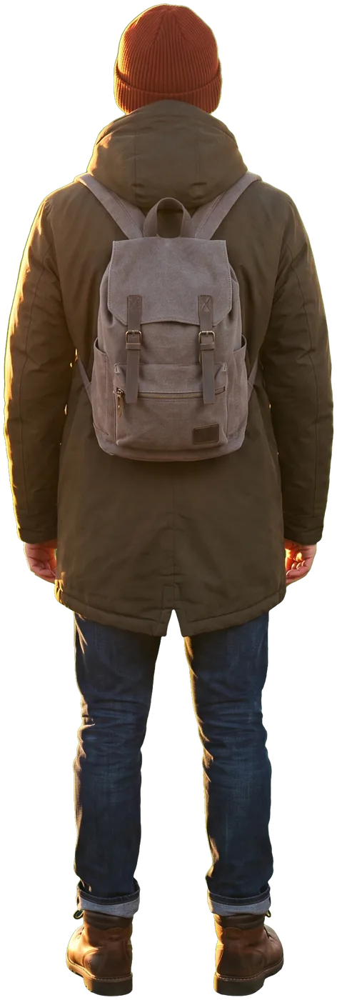

Рассвет
Листайте вниз


Город ещё спит.


У края леса он оглядывается.


Тропа уводит всё глубже.


Небо начинает светлеть.




И тогда встаёт солнце.
Рассвет
Эксперимент со скроллителлингом в стиле перекладки: вырезанные фигуры, слои и камера, которыми управляет прокрутка.